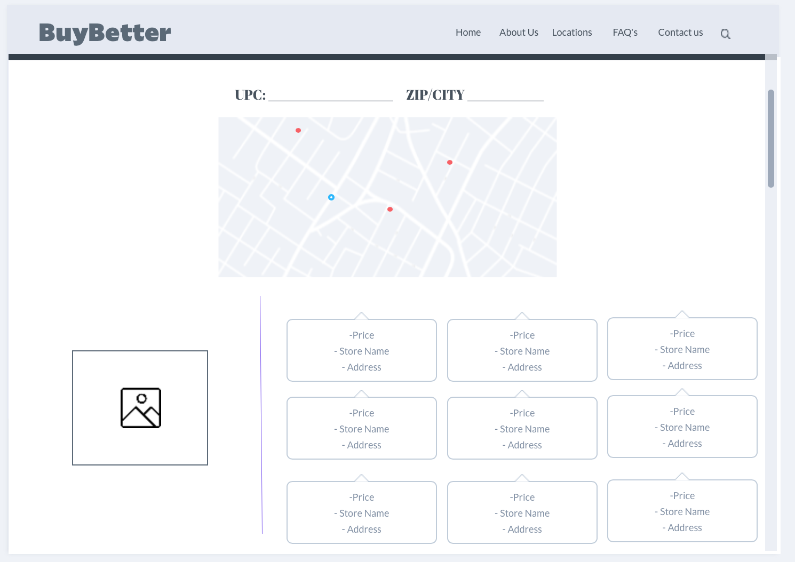

A brief description of the problem
What is the problem
The overall problem that we are addressing is Amazon’s control over other businesses as well as their impact on the environment. Online retailers used to depend on Amazon to sell their goods online, but now more and more are leaving to sell their products online independently. Stores such as Nike, Vans, Patagonia, as well as smaller businesses that may have no choice but to sell their products with Amazon do not want to rely on Amazon to support their business. Buying from Amazon also creates much more waste compared to that of going to a local business in town and buying the same or similar product in person.
What are you trying to solve
We are trying to solve the issue of people choosing to shop on Amazon, rather than shopping directly on sellers websites or at in person stores in their local area. Because of the convenience of shopping on Amazon, it is a difficult problem to solve, but we hope to make it easier for users to avoid Amazon, while still buying the products they want.
Which SDG goals are you trying to achieve
There are two main SDG goals we are trying to achieve. The first is SDG goal 8, decent work and economic growth. We are attempting to achieve this by supporting small and local businesses, rather than ordering online from Amazon. The second is SDG goal 12, responsible consumption and production. By making users aware of the impacts that their online purchases can have, we can make them think more responsibly about where the products they buy are coming from and how they are getting them.
Why is this an important problem? Is there any global impact?
Over the last few years, many online companies like Amazon have become the go-to for consumers to buy their products from. Small, local businesses are being looked over which has created an imbalance in the markets. Amazon has produced nearly 500 million pounds of packaging during 2020, along with 17 million metric tons of carbon in 2017 from one day shipping. They have evolved into a global brand that has created a mass amount of influence over customers including their buying habits and decisions. Shifting the focus back to shopping local would decrease the amount of total environmental effect on our world and give a consistent support for these smaller businesses.
The mass amount of shopping that is done through Amazon has a huge effect on not only the stability of local business but also on the environment. As of 2021, Amazon has over 200 million Prime subscribers, 147 million of which are in the United States. This does not account for those Amazon shoppers who do not subscribe to Amazon Prime. Amazon also ships about 1.6 million packages daily in the United States. If we can direct shoppers to stores in town that sell the same or similar products, we could cut down on waste, as well as emissions created from shipping. Along with this, there are nearly two million third party sellers on Amazon. If we are able to aid these third party sellers into having shoppers buy directly from them, and not having Amazon take a cut of their sales, we would be benefiting those businesses more.
Who are the target users? Why should they care
The target users, in a broad sense, are Amazon users. To be more specific, we are targeting users who are looking to find a way to avoid shopping on Amazon. Amazon is incredibly convenient in finding most any product, and it ships relatively quickly, so we understand how difficult it is to not rely on Amazon. Our project aims to provide Amazon users who are looking for alternatives more options to shop, whether that be directly on the websites of the third party sellers, or at a store near them.
How many people will benefit from your solution?
Our solution will benefit small business owners and employees, as well as the local environment. In the United States, there are 56.8 million small business employees which account for 40% of all employed people in the United States. Also, lessening the amount of waste produced benefits everyone, especially those who are concerned about the rise in waste and carbon production.
What is your solution?
Our solution is a website that takes an Amazon product URl as input, as well as the user's zip code, and outputs stores that are located near them that may have similar or the same product. Along with the store, it also displays a map of the store locations, as well as other details about the store, such as address. We also give the user the option to see if the third party seller on Amazon has their own web store, in an attempt to not take business away from a retailer who sells some products through Amazon. Our solution also provides information on the impact on online shopping not only through Amazon, but other major retailers.
How is your solution different from the existing solutions?
Currently, most existing solutions that we’ve found only provide ways to buy and sell things locally but lack the ability to inform people of the importance of local shopping and the impact of buying on Amazon and online shopping in general. It is our aim to inform people who are shopping on Amazon of local alternatives that sell similar products. Providing a service that allows people to understand the impact of shopping locally will not only prevent people from relying on big companies like Amazon but also raise awareness within their local surroundings on the impact of these companies on our environment and as well as other people’s livelihood.
What technology have you used? Why?
We’ve decided to create a website so that anyone with access to a computer with an internet connection can use our tool. We chose this over an app so that users would not be restricted to people with smartphones. We considered making this tool a browser extension, but decided not too mainly because we wanted our tool to be simple and easy to navigate, since some people may not be familiar with browser extensions.
Research Methodology
Systematic Literature Review
For our systematic literature review, we read a total of 8 papers. Each team member read 2 papers, and used what they learned in each paper to create a prototype for our project. The major findings that we found during our literature review were that many attempts to solve the issue of shipping were being done not by having people shop in person, but rather make more efficient ways to ship. We had a difficult time finding academic articles that focused on getting users to buy from local stores. Some findings we found did not actually address the issue of Amazon, and other large retailers for that matter, taking business away from small businesses. These findings helped us come up with a prototype as a group. Pictures of that prototype can be seen below. Because of our findings, we wanted to make it as easy as possible for the user to see that ordering a product online was not necessary, the product could be found at a number of locations near them.
System Analysis
For our system analysis, we analyzed 8 existing systems that have some similarities to our project. Each team member analyzed 2 systems individually, and used what they discovered within each system to update the group prototype. The major findings from the system analysis were that some systems only worked in certain areas, as well as only provided information on stores that “bought in” to the system. Taking these findings, we created an updated prototype. Pictures of the updated prototype can be found below. Because of our findings, we made it a goal for our project to work anywhere in the US, as well as display any store that is in the users area (provided it is listed on Google Maps).

User Study
For our user study, we conducted 4 interviews. Each team member conducted 1 interview. Some major findings from these interviews were users wanted the tool to be convenient, as Amazon is popular largely because of its convenience to users. We also found that users wanted a map of where the stores are, and we agreed, as we were already planning on implementing a map feature to display the stores. To address the issue of convenience, we added the store's address along with the map, so that the user knows exactly where each store is. We also added the pop up feature listing the original seller, as to give the user the option to still buy from the seller, just on the seller's personal website. Using these findings, we continued to implement our solution. There are no prototype images for this step as we were already in production of our solution.
Final Product
Final Prototype
The final prototype features for the home page include a form that takes in an Amazon URL, a zip code or the user's exact location. When submitting the form, the user is taken to what we call the results page. On this results page, the first feature is a pop up that displays the original seller's name, as well as a button that would search Google for that seller. This was implemented to avoid taking business away from small business sellers on Amazon, as we still want to support small businesses, and if they have a separate online store, we would rather buy directly from them. The user can then close the pop up and view 2 things. The first is a map with markers on each store that could have the product they searched for in their inventory. The map works like any other Google Map, it can be clicked, moved, and zoomed. Then, each store is also listed below the map, as well as the address of that store. Clicking on the store would move the map to display the store, to make it as easy as possible for a user to know where a store is. Finally, on what we call the information page, we have a quick paragraph explaining who we are and our purpose for the project, as well as several articles discussing not only Amazon’s impact on the environment and local businesses, but online shopping in general. We want to inform users of the importance of the problem, while also attempting to solve it.

Technology used
To create the look and layout of the website, we used HTML/CSS. To create the server that the website runs on, we used Node.js and Express.js which both use server side JavaScript. To make the request to get the Amazon product page, we used JavaScripts Axios package and JavaScripts Cheerio package to parse the web pages HTML. To get the store information and locations, we used the Google Maps Places API found here.
Future Work
One way we could extend this project is to create a browser extension version. In this version, the extension would recognize when a user is looking at an Amazon product, and the user would be prompted that that product is possibly available near them, or directly on the third seller's own website (if they have one). This would make the tool more useful by not having users have to copy and paste the Amazon product URL, it would do it automatically. Another way this work could be extended is by listing specific products, rather than just the stores. This would be useful because then users could know exactly what each store offers, instead of only knowing that the listed stores could have the product they are searching for.